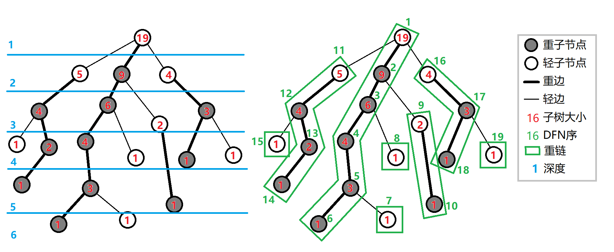
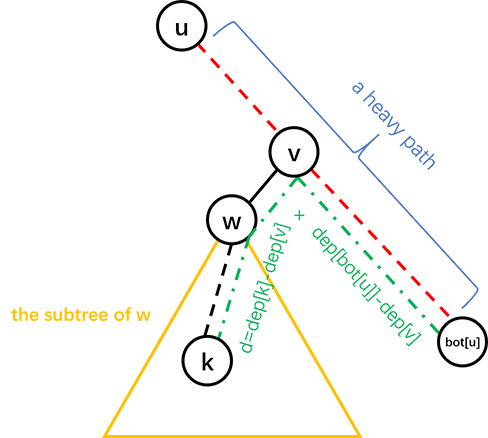

OI Wiki · prijevod · Teorija grafovaOI Wiki · translation · Graph theory
Heavy-light dekompozicija (dekompozicija stabla na lance)Heavy-light decomposition (tree chain decomposition)
Sadržaj
Uvod
Dekompozicija stabla na lance služi za rastavljanje stabla na niz lanaca radi održavanja informacija o putevima u stablu.
Konkretno, cijelo se stablo rastavi na niz lanaca, čime se složi u linearnu strukturu, a zatim se informacije održavaju drugim strukturama podataka.
Dekompozicija stabla na lance (tree chain decomposition) ima više oblika, npr. heavy-light dekompoziciju (heavy path decomposition), dekompoziciju na duge lance (long-path decomposition) i dekompoziciju koja se koristi u Link/cut Treeu (ponekad zvanu „dekompozicija na stvarne lance”). U većini slučajeva (ako nije posebno naglašeno) „dekompozicija na lance” znači „heavy-light dekompozicija”.
Heavy-light dekompozicija može bilo koji put u stablu podijeliti na najviše \(O(\log n)\) uzastopnih lanaca, pri čemu su dubine čvorova na svakom lancu međusobno različite (tj. lanac ide odozdo prema gore, a LCA svih čvorova lanca jedan je njegov kraj).
Heavy-light dekompozicija ujedno jamči da su DFS indeksi čvorova svakog dobivenog lanca uzastopni, pa se informacije o putevima u stablu mogu zgodno održavati strukturama podataka za nizove (npr. segment treeom). Primjerice:
- Izmjena vrijednosti svih čvorova na putu između dvaju čvorova stabla.
- Upit zbroja/ekstrema/drugih informacija (koje se u nizu mogu održavati strukturom podataka i lako spajati) težina čvorova na putu između dvaju čvorova stabla.
Osim za održavanje informacija o putevima u kombinaciji sa strukturama podataka, dekompozicija na lance može se koristiti i za računanje LCA u \(O(\log n)\) (s malom konstantom). U nekim se zadacima njezina svojstva mogu iskoristiti i na fleksibilnije načine.
Heavy-light dekompozicija
Uvedimo nekoliko definicija:
Teško dijete (heavy child) čvora jest ono njegovo dijete čije je podstablo najveće. Ako takvih ima više, uzmemo bilo koje. Ako čvor nema djece, nema ni teško dijete.
Laka djeca (light children) sva su ostala djeca.
Brid od čvora do njegova teškog djeteta je teški brid (heavy edge).
Bridovi do ostale, lake djece su laki bridovi (light edges).
Niz nadovezanih teških bridova čini teški lanac (heavy chain).
Ako i osamljene čvorove smatramo teškim lancima, cijelo je stablo rastavljeno na niz teških lanaca.
Kao na slici:

Implementacija
Implementacija dekompozicije sastoji se od dva DFS prolaza. Pseudokod je sljedeći:
Prvi DFS za svaki čvor bilježi roditelja (\(\textit{father}\)), dubinu (\(\textit{depth}\)), veličinu podstabla (\(\textit{size}\)) i teško dijete (\(\textit{hson}\)).
Drugi DFS bilježi vrh lanca kojem čvor pripada (\(\textit{top}\), treba ga inicijalizirati na sam čvor), DFS indeks pri obilasku s prednošću teških bridova (\(\textit{dfn}\)) i indeks čvora koji odgovara DFS indeksu (\(\textit{rank}\)).
Slijedi implementacija u kodu.
Najprije nekoliko definicija:
- \(\operatorname{fa}(x)\) označava roditelja čvora \(x\) u stablu.
- \(\operatorname{dep}(x)\) označava dubinu čvora \(x\) u stablu.
- \(\operatorname{siz}(x)\) označava broj čvorova u podstablu čvora \(x\).
- \(\operatorname{son}(x)\) označava teško dijete čvora \(x\).
- \(\operatorname{top}(x)\) označava vršni čvor (najmanje dubine) teškog lanca kojem \(x\) pripada.
- \(\operatorname{dfn}(x)\) označava DFS indeks čvora \(x\), ujedno njegov indeks u segment treeu.
- \(\operatorname{rnk}(x)\) označava indeks čvora koji odgovara DFS indeksu; vrijedi \(\operatorname{rnk}(\operatorname{dfn}(x))=x\).
Te vrijednosti predobradimo dvama DFS prolazima: prvi DFS računa \(\operatorname{fa}(x)\), \(\operatorname{dep}(x)\), \(\operatorname{siz}(x)\), \(\operatorname{son}(x)\), a drugi DFS računa \(\operatorname{top}(x)\), \(\operatorname{dfn}(x)\), \(\operatorname{rnk}(x)\).
void dfs1(int u, int f) {
fa[u] = f, dep[u] = dep[f] + 1, siz[u] = 1;
for (auto v : G[u]) {
if (v == f) continue;
dfs1(v, u);
siz[u] += siz[v];
if (siz[v] > siz[son[u]]) son[u] = v;
}
}
void dfs2(int u, int ftop) {
top[u] = ftop, dfn[u] = ++idx, rnk[idx] = u;
if (son[u]) dfs2(son[u], ftop);
for (auto v : G[u])
if (v != son[u] && v != fa[u]) dfs2(v, v);
}
Svojstva heavy-light dekompozicije
Svaki čvor stabla pripada točno jednom teškom lancu.
Početni čvor teškog lanca sigurno nije teško dijete (jer je početak teškog lanca ili korijen ili lako dijete svog roditelja).
Svi teški lanci zajedno potpuno rastavljaju cijelo stablo.
Pri dekompoziciji obilazimo s prednošću teških bridova, pa su u konačnom DFS poretku stabla DFS indeksi unutar teškog lanca uzastopni. Niz sortiran po DFN upravo su lanci dobiveni dekompozicijom.
DFS indeksi unutar jednog podstabla su uzastopni.
Uočavamo da se, kad prema dolje prijeđemo preko lakog brida, veličina podstabla u kojem se nalazimo barem prepolovi.
Stoga za bilo koji put u stablu, rastavimo li ga na dva silaska od LCA na obje strane, svaki silazak prelazi najviše \(O(\log n)\) lakih bridova, pa se svaki put u stablu može rastaviti na najviše \(O(\log n)\) teških lanaca.
Kako argumentirano srušiti HLD
U pravilu je \(O(\log n)\) HLD-a s nepunom konstantom teško srušiti; ako se želi, može se samo izgraditi binarno stablo male dubine.
Stoga možemo razmotriti kompromis.
Izgradimo binarno stablo sa \(\sqrt{n}\) čvorova. Svaki brid od čvora do njegova djeteta zamijenimo lancem duljine \(\sqrt{n}\).
Tako broj prijelaza između lakih i teških lanaca za slučajne upite možemo dovesti na prosječno \(\frac{\log n}{2}\), uz dubinu \(O(\sqrt{n} \log n)\).
Dodamo li još nekoliko slučajnih listova, čini se da bi se HLD mogao srušiti. No zbog male konstante HLD-a to možda ipak neće uspjeti.
Česte primjene
Održavanje na putu
Računanje zbroja težina na putu između dvaju čvorova stabla pomoću heavy-light dekompozicije; pseudokod je sljedeći:
DFS indeksi na lancu su uzastopni, pa se mogu održavati segment treeom ili Fenwick treeom.
Svaki put biramo lanac veće dubine i skačemo prema gore, dok oba čvora ne budu na istom lancu.
Ista struktura skakanja po lancima primjenjiva je za održavanje i brojanje drugih informacija na putu.
Održavanje podstabla
Ponekad se traži održavanje informacija na podstablu, primjerice povećanje težine svih čvorova podstabla s korijenom \(x\) za \(v\).
Pri DFS obilasku DFS indeksi čvorova unutar podstabla su uzastopni.
Za svaki čvor zabilježimo bottom, čvor na kraju uzastopnog intervala njegova podstabla.
Tako se informacija o podstablu pretvara u informaciju o uzastopnom intervalu.
Računanje LCA
Neprestano skačemo prema gore po teškim lancima; kad dođemo na isti teški lanac, čvor manje dubine je LCA.
Pri skakanju prema gore prvo skačemo s onim čvorom čiji vrh teškog lanca ima veću dubinu.
Primjer koda:
int lca(int u, int v) {
while (top[u] != top[v]) {
if (dep[top[u]] > dep[top[v]])
u = fa[top[u]];
else
v = fa[top[v]];
}
return dep[u] > dep[v] ? v : u;
}
Promjena korijena
Razmotrimo novu vrstu problema: osim osnovnih operacija koje heavy-light dekompozicija podržava, dodana je operacija promjene korijena.
Budući da su informacije koje održava dekompozicija statične, dinamičke izmjene nisu podržane. Istodobno, nemoguće je nakon svake promjene korijena ponovno raditi predobradu; složenost bi bila prevelika. Stoga treba što bolje iskoristiti prethodno dobivene informacije za obradu promjene korijena.
Za izmjene i upite na putu: budući da je jednostavni put između dvaju čvorova stabla jedinstven, ništa se ne mijenja i obrada je ista kao inače.
Za izmjene i upite na podstablu opća je ideja preslikati podstablo nakon promjene korijena na izvorno podstablo. Za to treba razlikovati slučajeve prema međusobnom položaju korijena operiranog podstabla, korijena cijelog stabla nakon promjene korijena i izvornog korijena stabla. Detalji su u primjeru zadatka „LOJ 139. Dekompozicija stabla na lance” u nastavku.
Primjeri zadataka
Na primjerima pokazujemo kako se primjenjuje heavy-light dekompozicija. Najprije jedan šablonski zadatak.
„ZJOI2008” Statistika stabla
Na statičnom stablu s \(n\) čvorova s težinama izvršite ukupno \(q\) operacija triju vrsta:
- izmijenite težinu pojedinog čvora;
- upitajte najveću težinu na putu od \(u\) do \(v\);
- upitajte zbroj težina na putu od \(u\) do \(v\).
Vrijedi \(1\le n\le 30000\), \(0\le q\le 200000\).
Rješenje
Prema tekstu zadatka i gore opisanim svojstvima, segment tree treba podržavati tri operacije:
- izmjenu u točki;
- upit maksimuma na intervalu;
- upit zbroja na intervalu.
Izmjena u točki lako se implementira.
Budući da su DFS indeksi podstabla uzastopni (bez obzira na dekompoziciju), za izmjenu podstabla nekog čvora dovoljno je izmijeniti taj uzastopni interval DFS indeksa.
Pitanje je kako izmijeniti/upitati put između dvaju čvorova.
Prisjetimo se kako smo binary liftingom računali LCA. Najprije smo dva čvora doveli na istu visinu, a zatim ih zajedno pomicali prema gore. Istu ideju možemo primijeniti i na heavy-light dekompoziciju.
Tijekom skakanja prema gore: ako je trenutačni čvor na teškom lancu, skačemo na vrh tog lanca; ako nije na teškom lancu, skačemo za jedan čvor prema gore. Tako dok dva čvora ne postanu jednaka. Usput ažuriramo/upitamo informacije intervala.
Za svaki upit prolazimo najviše \(O(\log n)\) teških lanaca, a složenost segment treea na svakom lancu je \(O(\log n)\), pa je ukupna vremenska složenost \(O(n\log n+q\log^2 n)\). U praksi broj teških lanaca teško doseže \(O(\log n)\) (može se zasititi potpunim binarnim stablom), pa dekompozicija u pravilu ima malu konstantu.
Primjer koda
#include <algorithm>
#include <cstring>
#include <iostream>
#define lc o << 1
#define rc o << 1 | 1
constexpr int MAXN = 60010;
constexpr int inf = 2e9;
int n, a, b, w[MAXN], q, u, v;
int cur, h[MAXN], nxt[MAXN], p[MAXN];
int siz[MAXN], top[MAXN], son[MAXN], dep[MAXN], fa[MAXN], dfn[MAXN], rnk[MAXN],
cnt;
char op[10];
void add_edge(int x, int y) { // dodavanje brida
cur++;
nxt[cur] = h[x];
h[x] = cur;
p[cur] = y;
}
struct SegTree {
int sum[MAXN * 4], maxx[MAXN * 4];
void build(int o, int l, int r) {
if (l == r) {
sum[o] = maxx[o] = w[rnk[l]];
return;
}
int mid = (l + r) >> 1;
build(lc, l, mid);
build(rc, mid + 1, r);
sum[o] = sum[lc] + sum[rc];
maxx[o] = std::max(maxx[lc], maxx[rc]);
}
int query1(int o, int l, int r, int ql, int qr) { // upit za max
if (l > qr || r < ql) return -inf;
if (ql <= l && r <= qr) return maxx[o];
int mid = (l + r) >> 1;
return std::max(query1(lc, l, mid, ql, qr), query1(rc, mid + 1, r, ql, qr));
}
int query2(int o, int l, int r, int ql, int qr) { // upit za sum
if (l > qr || r < ql) return 0;
if (ql <= l && r <= qr) return sum[o];
int mid = (l + r) >> 1;
return query2(lc, l, mid, ql, qr) + query2(rc, mid + 1, r, ql, qr);
}
void update(int o, int l, int r, int x, int t) { // ažuriranje
if (l == r) {
maxx[o] = sum[o] = t;
return;
}
int mid = (l + r) >> 1;
if (x <= mid)
update(lc, l, mid, x, t); // ažuriraj lijevo odnosno desno
else
update(rc, mid + 1, r, x, t);
sum[o] = sum[lc] + sum[rc];
maxx[o] = std::max(maxx[lc], maxx[rc]);
}
} st;
void dfs1(int o) {
son[o] = -1;
siz[o] = 1;
for (int j = h[o]; j; j = nxt[j])
if (!dep[p[j]]) {
dep[p[j]] = dep[o] + 1;
fa[p[j]] = o;
dfs1(p[j]);
siz[o] += siz[p[j]];
if (son[o] == -1 || siz[p[j]] > siz[son[o]]) son[o] = p[j];
}
}
void dfs2(int o, int t) {
top[o] = t;
cnt++;
dfn[o] = cnt;
rnk[cnt] = o;
if (son[o] == -1) return;
dfs2(son[o], t);
for (int j = h[o]; j; j = nxt[j])
if (p[j] != son[o] && p[j] != fa[o]) dfs2(p[j], p[j]);
}
int querymax(int x, int y) { // upit; pogledaj funkciju main da bi bilo jasnije
int ret = -inf, fx = top[x], fy = top[y];
while (fx != fy) {
if (dep[fx] >= dep[fy])
ret = std::max(ret, st.query1(1, 1, n, dfn[fx], dfn[x])), x = fa[fx];
else
ret = std::max(ret, st.query1(1, 1, n, dfn[fy], dfn[y])), y = fa[fy];
fx = top[x];
fy = top[y];
}
if (dfn[x] < dfn[y])
ret = std::max(ret, st.query1(1, 1, n, dfn[x], dfn[y]));
else
ret = std::max(ret, st.query1(1, 1, n, dfn[y], dfn[x]));
return ret;
}
int querysum(int x, int y) {
int ret = 0, fx = top[x], fy = top[y];
while (fx != fy) {
if (dep[fx] >= dep[fy])
ret += st.query2(1, 1, n, dfn[fx], dfn[x]), x = fa[fx];
else
ret += st.query2(1, 1, n, dfn[fy], dfn[y]), y = fa[fy];
fx = top[x];
fy = top[y];
}
if (dfn[x] < dfn[y])
ret += st.query2(1, 1, n, dfn[x], dfn[y]);
else
ret += st.query2(1, 1, n, dfn[y], dfn[x]);
return ret;
}
using std::cin;
using std::cout;
int main() {
cin.tie(nullptr)->sync_with_stdio(false);
cin >> n;
for (int i = 1; i < n; i++) cin >> a >> b, add_edge(a, b), add_edge(b, a);
for (int i = 1; i <= n; i++) cin >> w[i];
dep[1] = 1;
dfs1(1);
dfs2(1, 1);
st.build(1, 1, n);
cin >> q;
while (q--) {
cin >> op >> u >> v;
if (!strcmp(op, "CHANGE")) st.update(1, 1, n, dfn[u], v);
if (!strcmp(op, "QMAX")) cout << querymax(u, v) << '\n';
if (!strcmp(op, "QSUM")) cout << querysum(u, v) << '\n';
}
return 0;
}
Zatim šablonski zadatak s heavy-light dekompozicijom i operacijom promjene korijena.
LOJ 139. Dekompozicija stabla na lance
Zadano je stablo s \(n\) čvorova (početni korijen je \(1\)); treba podržati sljedećih \(m\) operacija:
- promjena korijena: čvor \(u\) postaje novi korijen stabla;
- izmjena težina čvorova na putu: težine svih čvorova na putu između čvorova \(u\) i \(v\) (uključujući ta dva čvora) povećaju se za \(w\);
- izmjena težina čvorova u podstablu: težine svih čvorova u podstablu s korijenom \(u\) povećaju se za \(w\);
- upit puta: zbroj težina svih čvorova na putu između čvorova \(u\) i \(v\) (uključujući ta dva čvora);
- upit podstabla: zbroj težina svih čvorova u podstablu s korijenom \(u\).
\(1 \le n,m \le 10^5\).
Rješenje
Najprije pokrenemo DFS s korijenom \(1\) i predobradimo informacije potrebne za heavy-light dekompoziciju. Radi jednostavnosti, stablo s korijenom \(1\) zovemo „izvorno stablo”, a stablo nakon nekoliko promjena korijena „trenutačno stablo”. Tijekom operacija održavamo \(\textit{root}\), korijen trenutačnog stabla. Budući da segment tree pohranjuje informacije u DFS poretku izvornog stabla, pri svakom upitu i izmjeni operacije na trenutačnom stablu treba pretvoriti u operacije na izvornom stablu.
Za promjenu korijena jednostavno postavimo \(\textit{root}\gets u\). Za operacije na putu, budući da promjena korijena ne utječe na put, odgovarajuću operaciju izvedemo izravno na izvornom stablu.
Glavno je pitanje operacija na podstablu. Razlikujemo slučajeve prema međusobnom položaju \(u\) i \(\textit{root}\):
- \(u = \textit{root}\): najposebniji slučaj, operacija se odnosi na cijelo stablo. Dovoljno je postaviti oznaku na korijen segment treea ili upitati odgovor u korijenu.
-
\(u\) je predak od \(\textit{root}\) u izvornom stablu, tj. \(u\) leži na jednostavnom putu od \(1\) do \(\textit{root}\).
To je slučaj koji najviše zaslužuje pozornost. Definiramo \(v\) kao čvor najmanje dubine, osim \(u\), na jednostavnom putu od \(u\) do \(\textit{root}\) u izvornom stablu; uočavamo da je dio izvornog stabla izvan \(v\) i njegova podstabla upravo \(u\) i njegovo podstablo u trenutačnom stablu.
Razmotrimo kako učinkovito pronaći \(v\). Najprije postavimo \(v\gets\textit{root}\), a zatim skačemo prema gore po teškim lancima dok ne bude \(\operatorname{dep}(\operatorname{top}(v))\le\operatorname{dep}(u)+1\).
- Ako je \(\operatorname{dep}(\operatorname{top}(v))=\operatorname{dep}(u)+1\), postavimo \(v\gets\operatorname{top}(v)\). Tada je \(v\) lako dijete od \(u\).
- Ako je \(\operatorname{dep}(\operatorname{top}(v))<\operatorname{dep}(u)+1\), tj. \(\operatorname{dep}(\operatorname{top}(v))\le \operatorname{dep}(u)\), to znači da su \(u,v\) na istom teškom lancu. Prema svojstvu da su DFS indeksi na istom teškom lancu uzastopni, traženi \(v\) nužno zadovoljava \(\operatorname{dfn}(v)=\operatorname{dfn}(u)+1\). Stoga možemo postaviti \(v\gets\operatorname{rnk}(\operatorname{dfn}(u)+1)\).
Primijetimo da se ta dva slučaja mogu spojiti: nakon skakanja možemo izravno postaviti
\[ v\gets\operatorname{rnk}(\operatorname{dfn}(\operatorname{top}(v))+\operatorname{dep}(u)+1-\operatorname{dep}(\operatorname{top}(v))). \]Lako se provjeri da je \(v\) dobiven tim izrazom jednak \(v\) dobivenom razlikovanjem slučajeva. Primjer implementacije koristi upravo taj izraz.
Budući da podstablo od \(v\) pokriva interval \([\operatorname{dfn}(v),\operatorname{dfn}(v)+\operatorname{siz}(v))\), dovoljno je operaciju izvesti na \([1,\operatorname{dfn}(v))\cup[\operatorname{dfn}(v)+\operatorname{siz}(v),n]\).
-
Ostali slučajevi. Uočavamo da promjena korijena ne utječe na podstablo od \(u\), pa ga održavamo na uobičajen način.
Složenost je ista kao kod pristupa bez promjene korijena, \(O(n\log^2 n)\).
Primjer koda
#include <iostream>
#include <vector>
using lint = long long;
constexpr int N = 1e5 + 10;
int n, m, root, a[N];
std::vector<int> G[N];
int idx, fa[N], dep[N], siz[N], son[N], top[N], dfn[N], rnk[N];
struct SegmentTree { // segment tree s dodavanjem na intervalu i zbrojem na intervalu
lint sum[N << 2], lzy[N << 2];
void maketag(int u, int l, int r, lint x) {
sum[u] += (r - l + 1) * x;
lzy[u] += x;
}
void pushup(int u) { sum[u] = sum[u << 1] + sum[u << 1 | 1]; }
void pushdown(int u, int l, int r) {
int mid = l + r >> 1;
maketag(u << 1, l, mid, lzy[u]);
maketag(u << 1 | 1, mid + 1, r, lzy[u]);
lzy[u] = 0;
}
void build(int u, int l, int r) {
if (l == r) {
sum[u] = a[rnk[l]];
return;
}
int mid = l + r >> 1;
build(u << 1, l, mid), build(u << 1 | 1, mid + 1, r);
pushup(u);
}
void upd(int u, int l, int r, int ql, int qr, lint x) {
if (ql <= l && r <= qr) {
maketag(u, l, r, x);
return;
}
int mid = l + r >> 1;
pushdown(u, l, r);
if (ql <= mid) upd(u << 1, l, mid, ql, qr, x);
if (qr > mid) upd(u << 1 | 1, mid + 1, r, ql, qr, x);
pushup(u);
}
lint ask(int u, int l, int r, int ql, int qr) {
if (ql <= l && r <= qr) return sum[u];
int mid = l + r >> 1;
pushdown(u, l, r);
if (qr <= mid) return ask(u << 1, l, mid, ql, qr);
if (ql > mid) return ask(u << 1 | 1, mid + 1, r, ql, qr);
return ask(u << 1, l, mid, ql, qr) + ask(u << 1 | 1, mid + 1, r, ql, qr);
}
} T;
void dfs1(int u, int f) { // HLD predobrada 1
fa[u] = f, dep[u] = dep[f] + 1, siz[u] = 1;
for (auto v : G[u]) {
if (v == f) continue;
dfs1(v, u);
siz[u] += siz[v];
if (siz[v] > siz[son[u]]) son[u] = v;
}
}
void dfs2(int u, int tp) { // HLD predobrada 2
top[u] = tp, dfn[u] = ++idx, rnk[idx] = u;
if (son[u]) dfs2(son[u], tp);
for (auto v : G[u])
if (v != fa[u] && v != son[u]) dfs2(v, v);
}
void modify_path(int u, int v, int w) { // uobičajeni HLD
while (top[u] != top[v]) {
if (dep[top[u]] < dep[top[v]]) std::swap(u, v);
T.upd(1, 1, n, dfn[top[u]], dfn[u], w);
u = fa[top[u]];
}
if (dep[u] < dep[v]) std::swap(u, v);
T.upd(1, 1, n, dfn[v], dfn[u], w);
}
void modify_subtree(int u, int w) {
if (u == root)
T.maketag(1, 1, n, w);
else if (dfn[u] <= dfn[root] && dfn[root] <= dfn[u] + siz[u] - 1) {
int v = root;
while (dep[top[v]] > dep[u] + 1) v = fa[top[v]]; // skači prema gore
v = rnk[dfn[top[v]] + dep[u] + 1 - dep[top[v]]]; // izračunaj v
// Gornji redak može se zamijeniti sljedećim dvama retcima:
// if (dep[top[v]] == dep[u] + 1) v = top[v];
// else if (dep[top[v]] < dep[u] + 1) v = rnk[dfn[u] + 1];
if (1 <= dfn[v] - 1) T.upd(1, 1, n, 1, dfn[v] - 1, w);
if (dfn[v] + siz[v] <= n) T.upd(1, 1, n, dfn[v] + siz[v], n, w);
} else
T.upd(1, 1, n, dfn[u], dfn[u] + siz[u] - 1, w);
}
lint query_path(int u, int v) { // uobičajeni HLD
lint res = 0;
while (top[u] != top[v]) {
if (dep[top[u]] < dep[top[v]]) std::swap(u, v);
res += T.ask(1, 1, n, dfn[top[u]], dfn[u]);
u = fa[top[u]];
}
if (dep[u] < dep[v]) std::swap(u, v);
res += T.ask(1, 1, n, dfn[v], dfn[u]);
return res;
}
lint query_subtree(int u) {
if (u == root) return T.sum[1];
if (dfn[u] <= dfn[root] && dfn[root] <= dfn[u] + siz[u] - 1) {
int v = root;
while (dep[top[v]] > dep[u] + 1) v = fa[top[v]];
v = rnk[dfn[top[v]] + dep[u] + 1 - dep[top[v]]];
lint res = 0;
if (1 <= dfn[v] - 1) res += T.ask(1, 1, n, 1, dfn[v] - 1);
if (dfn[v] + siz[v] <= n) res += T.ask(1, 1, n, dfn[v] + siz[v], n);
return res;
}
return T.ask(1, 1, n, dfn[u], dfn[u] + siz[u] - 1);
}
int main() {
std::cin.tie(nullptr)->sync_with_stdio(false);
std::cin >> n, root = 1;
for (int i = 1; i <= n; ++i) std::cin >> a[i];
for (int i = 2, f; i <= n; ++i) {
std::cin >> f;
G[i].emplace_back(f);
G[f].emplace_back(i);
}
dfs1(1, 0), dfs2(1, 1), T.build(1, 1, n); // predobrada
for (std::cin >> m; m; --m) {
int op, u, v, w;
std::cin >> op >> u;
if (op == 1)
root = u; // promjena korijena
else if (op == 2)
std::cin >> v >> w, modify_path(u, v, w); // izmijeni put
else if (op == 3)
std::cin >> w, modify_subtree(u, w); // izmijeni podstablo
else if (op == 4)
std::cin >> v, std::cout << query_path(u, v) << "\n"; // upit na putu
else
std::cout << query_subtree(u) << "\n"; // upit na podstablu
}
std::cout.flush();
return 0;
}
Na kraju jedan interaktivni zadatak, ujedno netradicionalna primjena dekompozicije.
Nauuo and Binary Tree
Zadano je binarno stablo s korijenom \(1\); smijete upitati udaljenost između bilo koja dva čvora, a treba odrediti roditelja svakog čvora.
Broj čvorova ne premašuje \(3000\), a smijete postaviti najviše \(30000\) upita.
Rješenje
Najprije s \(n-1\) upita možemo odrediti dubinu svakog čvora.
Zatim roditelje određujemo po rastućoj dubini, tako da su pri određivanju roditelja nekog čvora svi njegovi preci već poznati.
Prije određivanja roditelja nekog čvora napravimo heavy-light dekompoziciju poznatog dijela stabla.
Pretpostavimo da u podstablu \(u\) trebamo pronaći položaj čvora \(k\); možemo upitati udaljenost između \(k\) i donjeg kraja teškog lanca kojem pripada \(u\), čime dalje određujemo položaj \(k\); vidi sliku:

Crvena isprekidana crta je teški lanac, \(d\) je rezultat upita, tj. \(\textit{dis}(k, \textit{bot}(u))\), a dubina od \(v\) je \((\textit{dep}(k)+\textit{dep}(\textit{bot}(u))-d)/2\).
Tada, ako \(v\) ima samo jedno dijete, roditelj od \(k\) je \(v\); inače rekurzivno tražimo roditelja od \(k\) u podstablu od \(w\).
Vremenska složenost \(O(n^2)\), složenost broja upita \(O(n\log n)\).
Konkretno, neka je \(T(n)\) broj upita potreban u najgorem slučaju da se u stablu veličine \(n\) pronađe položaj novog čvora; dobivamo:
\(2999+\sum_{i=1}^{2999}T(i)\le 29940\); zapravo se ta gornja granica može dostići konstruiranim podacima, no uz malo slučajnog poremećaja (npr. korištenjem nestabilnog algoritma sortiranja pri sortiranju po dubini) broj upita teško premašuje \(21000\).
Primjer koda
#include <algorithm>
#include <cstdio>
#include <iostream>
using namespace std;
constexpr int N = 3010;
int n, fa[N], ch[N][2], dep[N], siz[N], son[N], bot[N], id[N];
int query(int u, int v) {
printf("? %d %d\n", u, v);
fflush(stdout);
int d;
scanf("%d", &d);
return d;
}
void setFather(int u, int v) {
fa[v] = u;
if (ch[u][0])
ch[u][1] = v;
else
ch[u][0] = v;
}
void dfs(int u) {
if (ch[u][0]) dfs(ch[u][0]);
if (ch[u][1]) dfs(ch[u][1]);
siz[u] = siz[ch[u][0]] + siz[ch[u][1]] + 1;
if (ch[u][1])
son[u] = int(siz[ch[u][0]] < siz[ch[u][1]]);
else
son[u] = 0;
if (ch[u][son[u]])
bot[u] = bot[ch[u][son[u]]];
else
bot[u] = u;
}
void solve(int u, int k) {
if (!ch[u][0]) {
setFather(u, k);
return;
}
int d = query(k, bot[u]);
int v = bot[u];
while (dep[v] > (dep[k] + dep[bot[u]] - d) / 2) v = fa[v];
int w = ch[v][son[v] ^ 1];
if (w)
solve(w, k);
else
setFather(v, k);
}
int main() {
int i;
scanf("%d", &n);
for (i = 2; i <= n; ++i) {
id[i] = i;
dep[i] = query(1, i);
}
sort(id + 2, id + n + 1, [](int x, int y) { return dep[x] < dep[y]; });
for (i = 2; i <= n; ++i) {
dfs(1);
solve(1, id[i]);
}
printf("!");
for (i = 2; i <= n; ++i) printf(" %d", fa[i]);
printf("\n");
fflush(stdout);
return 0;
}
Dekompozicija na duge lance
Dekompozicija na duge lance (long-path decomposition) u biti je samo drugi način dekompozicije na lance.
Teško dijete (heavy child) čvora jest ono njegovo dijete čije podstablo ima najveću dubinu. Ako takvih ima više, uzmemo bilo koje. Ako čvor nema djece, nema ni teško dijete.
Laka djeca sva su ostala djeca.
Brid od čvora do njegova teškog djeteta je teški brid.
Bridovi do ostale, lake djece su laki bridovi.
Niz nadovezanih teških bridova čini teški lanac.
Ako i osamljene čvorove smatramo teškim lancima, cijelo je stablo rastavljeno na niz teških lanaca.
Kao na slici (ova se dekompozicija može shvatiti i kao heavy-light dekompozicija i kao dekompozicija na duge lance):
Implementacija dekompozicije na duge lance slična je heavy-light dekompoziciji pa je ovdje nećemo razrađivati.
Česte primjene
Najprije uočimo da je kod dekompozicije na duge lance broj prijelaza preko lakih bridova na putu od čvora do korijena reda \(\sqrt{n}\).
Kako konstruirati podatke koji maksimiziraju broj prijelaza između lakih i teških bridova
Možemo konstruirati ovakvo binarno stablo T:
Neka je parametar konstruiranog binarnog stabla \(D\).
Ako je \(D \neq 0\), u lijevom djetetu konstruiramo binarno stablo s parametrom \(D-1\), a u desnom djetetu lanac duljine \(2D-1\).
Ako je \(D = 0\), konstruiramo samo jedan osamljeni list i završavamo poziv.
Takva konstrukcija jamči da su svi bridovi na putu od osamljenog lista do korijena laki, a potreban je broj čvorova reda \(D^2\).
Dovoljno je uzeti \(D=\sqrt{n}\).
Optimizacija DP-a dekompozicijom na duge lance
U pravilu DP koji se može optimizirati dekompozicijom na duge lance ima jednu dimenziju stanja koja je dimenzija dubine.
Možemo razmotriti optimizaciju DP-a na stablu dekompozicijom na duge lance.
Konkretno, stanje svakog čvora izravno nasljeđujemo od njegova teškog djeteta, a DP stanja lake djece spajamo „na silu”.
Codeforces 1009 F. Dominant Indices
Zadano je korijensko stablo s \(n\) vrhova, s korijenom u vrhu \(1\).
Niz dubina vrha \(x\) definiran je kao beskonačan niz \([d_{x, 0}, d_{x, 1}, d_{x, 2}, \dots]\), gdje \(d_{x, i}\) označava broj vrhova \(y\) koji zadovoljavaju sljedeća dva uvjeta:
- \(x\) je predak od \(y\);
- jednostavni put od \(x\) do \(y\) prolazi točno \(i\) bridova.
Dominantni indeks (dominant index) niza dubina vrha \(x\) (kraće: dominantni indeks vrha \(x\)) definiran je kao indeks \(j\) za koji vrijedi:
- za sve \(k < j\) vrijedi \(d_{x, k} < d_{x, j}\);
- za sve \(k > j\) vrijedi \(d_{x, k} \le d_{x, j}\).
Izračunajte dominantni indeks svakog vrha stabla.
Rješenje
Neka \(f_{i,j}\) označava broj čvorova u podstablu i na udaljenosti j od i.
Izravan grubi prijelaz ima vremensku složenost \(O(n^2)\)
Razmotrimo da pri svakom prijelazu izravno naslijedimo DP polje i odgovor teškog djeteta, a zatim ih na toj osnovi ažuriramo.
Najprije na početak DP polja teškog djeteta trebamo umetnuti element 1, koji predstavlja trenutačni čvor.
Zatim DP polja sve lake djece na silu spojimo s DP poljem trenutačnog čvora.
Uočimo da je duljina DP polja lakog djeteta jednaka duljini teškog lanca kojem lako dijete pripada, a zbroj duljina svih teških lanaca je \(n\).
Drugim riječima, ukupna vremenska složenost grubog spajanja lake djece je \(O(n)\).
Primjer koda
#include <algorithm>
#include <iostream>
using namespace std;
constexpr int N = 1000005;
struct edge {
int to, next;
} e[N * 2];
int head[N], tot, n;
int d[N], fa[N], mx[N];
int *f[N], g[N], mxp[N];
int dfn[N];
void add(int x, int y) {
e[++tot] = edge{y, head[x]};
head[x] = tot;
}
void dfs1(int x) { // prvi put: umetni jednu jedinicu
d[x] = 1;
for (int i = head[x]; i; i = e[i].next)
if (e[i].to != fa[x]) {
fa[e[i].to] = x;
dfs1(e[i].to);
d[x] = max(d[x], d[e[i].to] + 1);
if (d[e[i].to] > d[mx[x]]) mx[x] = e[i].to;
}
}
void dfs2(int x) { // drugi put: spajanje
dfn[x] = ++*dfn;
f[x] = g + dfn[x];
if (mx[x]) dfs2(mx[x]);
for (int i = head[x]; i; i = e[i].next)
if (e[i].to != fa[x] && e[i].to != mx[x]) dfs2(e[i].to);
}
void getans(int x) { // grubom silom spoji i izračunaj odgovor
if (mx[x]) {
getans(mx[x]);
mxp[x] = mxp[mx[x]] + 1;
}
f[x][0] = 1;
if (f[x][mxp[x]] <= 1) mxp[x] = 0;
for (int i = head[x]; i; i = e[i].next)
if (e[i].to != fa[x] && e[i].to != mx[x]) {
getans(e[i].to);
int len = d[e[i].to];
for (int j = 0; j <= len - 1; j++) {
f[x][j + 1] += f[e[i].to][j];
if (f[x][j + 1] > f[x][mxp[x]]) mxp[x] = j + 1;
if (f[x][j + 1] == f[x][mxp[x]] && j + 1 < mxp[x]) mxp[x] = j + 1;
}
}
}
int main() {
cin.tie(nullptr)->sync_with_stdio(false);
cin >> n;
for (int i = 1; i < n; i++) {
int x, y;
cin >> x >> y;
add(x, y);
add(y, x);
}
dfs1(1);
dfs2(1);
getans(1);
for (int i = 1; i <= n; i++) cout << mxp[i] << '\n';
}
Napomena: u pravilu se memorija za DP polje dodjeljuje odjednom za cijeli teški lanac, a različiti čvorovi na lancu imaju različite pokazivače na početni položaj.
Duljinu DP polja možemo izračunati prema najdubljem čvoru podstabla.
Naravno, tehnika optimizacije DP-a dekompozicijom na duge lance ima mnogo varijanti, uključujući, ali ne ograničavajući se na lijene oznake itd. Ovdje ih nećemo razrađivati.
Vidi blog korisnika 租酥雨.
Traženje k-tog pretka dekompozicijom na duge lance
Dakle, upit: čvor do kojeg dolazimo skočimo li iz nekog čvora \(k\) puta prema roditelju.
Najprije pretpostavimo da smo već predobradili \(2^i\)-te pretke svakog čvora.
Pretpostavimo sada da smo pronašli \(2^i\)-tog pretka upitanog čvora takvog da je \(2^i \le k < 2^{i+1}\).
Odredimo čvorove teškog lanca kojem on pripada i popišemo ih u tablicu po dubini. Neka je duljina teškog lanca \(d\).
Istodobno u predobradi za vrh svakog teškog lanca pronađemo njegove pretke od \(1.\) do \(d.\) i također ih stavimo u tablicu.
Prema svojstvu dekompozicije na duge lance, \(k-2^i \le 2^i \leq d\), odnosno \(k\)-tog pretka tog čvora možemo u \(O(1)\) očitati iz tablice tog teškog lanca.
Predobrada zahtijeva binary lifting za \(2^i\)-te pretke te predobradu tablice za svaki teški lanac.
Složenost predobrade \(O(n\log n)\), složenost upita \(O(1)\).
Zadaci za vježbu
- „Luogu P3379” 【模板】Najniži zajednički predak (LCA) (računanje LCA dekompozicijom ne treba strukturu podataka, dobro za vježbu)
- „JLOI2014” Vjeveričin novi dom (može i razlikama na stablu)
- „HAOI2015” Operacije na stablu
- „Luogu P3384” 【模板】Heavy-light dekompozicija / dekompozicija na lance
- „Luogu P1505” [Nacionalni kamp] Putovanje
- „NOI2015” Upravitelj paketa
- „SDOI2011” Bojenje
- „SDOI2014” Putovanje
- „Luogu P3979” Daleka zemlja
- „POI2014” Hotel, pojačana inačica (optimizacija DP-a dekompozicijom na duge lance)
- Strategija (optimizacija greedyja dekompozicijom na duge lance)
Contents
Introduction
Tree chain decomposition is used to split a tree into a number of chains in order to maintain information about paths in the tree.
Concretely, the whole tree is decomposed into a number of chains so that it forms a linear structure, and then the information is maintained with other data structures.
Tree chain decomposition comes in several forms, such as heavy-light decomposition (heavy path decomposition), long-path decomposition, and the decomposition used in Link/cut Trees (sometimes called "preferred path decomposition"). In most cases (unless specified otherwise), "tree chain decomposition" refers to "heavy-light decomposition".
Heavy-light decomposition can split any path in a tree into at most \(O(\log n)\) contiguous chains, where the depths of the nodes on each chain are pairwise distinct (i.e. each chain goes bottom-up, and the LCA of all nodes on the chain is one of its endpoints).
Heavy-light decomposition also guarantees that the DFS order of the nodes on every resulting chain is contiguous, so data structures for maintaining sequences (such as segment trees) can be conveniently used to maintain information about paths in the tree. For example:
- Modify the values of all nodes on the path between two nodes of the tree.
- Query the sum/extremum/other information (that can be maintained with a data structure on a sequence and merged easily) of the node weights on the path between two nodes of the tree.
Besides maintaining path information together with data structures, tree chain decomposition can also be used to compute the LCA in \(O(\log n)\) (with a small constant factor). In some problems its properties can also be exploited in flexible ways.
Heavy-light decomposition
We give some definitions:
The heavy child of a node is the child whose subtree is the largest among its children. If there are several children with the largest subtree, pick any one. If there are no children, there is no heavy child.
The light children are all the remaining children.
The edge from a node to its heavy child is a heavy edge.
The edges to the other, light children are light edges.
A number of heavy edges joined end to end form a heavy chain.
Treating isolated nodes as heavy chains as well, the whole tree is decomposed into a number of heavy chains.
As in the figure:
Implementation
The implementation of the decomposition consists of two DFS passes. The pseudocode is as follows:
The first DFS records, for every node, its parent (\(\textit{father}\)), depth (\(\textit{depth}\)), subtree size (\(\textit{size}\)) and heavy child (\(\textit{hson}\)).
The second DFS records the top of the chain the node belongs to (\(\textit{top}\), which should be initialized to the node itself), the DFS order when traversing heavy edges first (\(\textit{dfn}\)), and the node index corresponding to each DFS index (\(\textit{rank}\)).
The code implementation follows.
First some definitions:
- \(\operatorname{fa}(x)\) denotes the parent of node \(x\) in the tree.
- \(\operatorname{dep}(x)\) denotes the depth of node \(x\) in the tree.
- \(\operatorname{siz}(x)\) denotes the number of nodes in the subtree of node \(x\).
- \(\operatorname{son}(x)\) denotes the heavy child of node \(x\).
- \(\operatorname{top}(x)\) denotes the top node (of minimum depth) of the heavy chain containing node \(x\).
- \(\operatorname{dfn}(x)\) denotes the DFS index of node \(x\), which is also its index in the segment tree.
- \(\operatorname{rnk}(x)\) denotes the node index corresponding to a DFS index; we have \(\operatorname{rnk}(\operatorname{dfn}(x))=x\).
We preprocess these values with two DFS passes: the first DFS computes \(\operatorname{fa}(x)\), \(\operatorname{dep}(x)\), \(\operatorname{siz}(x)\), \(\operatorname{son}(x)\), and the second DFS computes \(\operatorname{top}(x)\), \(\operatorname{dfn}(x)\), \(\operatorname{rnk}(x)\).
void dfs1(int u, int f) {
fa[u] = f, dep[u] = dep[f] + 1, siz[u] = 1;
for (auto v : G[u]) {
if (v == f) continue;
dfs1(v, u);
siz[u] += siz[v];
if (siz[v] > siz[son[u]]) son[u] = v;
}
}
void dfs2(int u, int ftop) {
top[u] = ftop, dfn[u] = ++idx, rnk[idx] = u;
if (son[u]) dfs2(son[u], ftop);
for (auto v : G[u])
if (v != son[u] && v != fa[u]) dfs2(v, v);
}
Properties of heavy-light decomposition
Every node of the tree belongs to exactly one heavy chain.
The first node of a heavy chain is certainly not a heavy child (because the first node of a heavy chain is either the root or a light child of its parent).
All heavy chains together completely decompose the whole tree.
During the decomposition we traverse heavy edges first, so in the final DFS order of the tree, the DFS indices within a heavy chain are contiguous. The sequence sorted by DFN is exactly the chains after decomposition.
The DFS indices within a subtree are contiguous.
One can see that whenever we go down through a light edge, the size of the subtree we are in is at least halved.
Therefore, for any path in the tree, splitting it into two descents from the LCA toward both sides, each descent takes at most \(O(\log n)\) steps, so every path in the tree can be split into at most \(O(\log n)\) heavy chains.
How to break HLD with good reason
In general, the \(O(\log n)\) of HLD with a non-tight constant is hard to break; if one wants to, one can only build a binary tree of low depth.
So we may consider a compromise.
We build a binary tree with \(\sqrt{n}\) nodes. For every edge from a node to its child, we replace it with a chain of length \(\sqrt{n}\).
This way we can push the number of light/heavy chain switches for random queries to \(\frac{\log n}{2}\) on average, while having depth \(O(\sqrt{n} \log n)\).
Adding some random leaves seems able to break HLD. But since the constant factor of HLD is small, it may still not be broken.
Common applications
Path maintenance
Computing the sum of weights on the path between two nodes of a tree with heavy-light decomposition; the pseudocode is as follows:
The DFS indices on a chain are contiguous, so they can be maintained with a segment tree or a Fenwick tree.
Each time, pick the chain of larger depth and jump upward, until both nodes are on the same chain.
The same chain-jumping structure applies to maintaining and counting other information on paths.
Subtree maintenance
Sometimes it is required to maintain information on a subtree, for example increasing the weights of all nodes in the subtree rooted at \(x\) by \(v\).
During the DFS, the DFS indices of the nodes in a subtree are contiguous.
For every node record bottom, the node at the end of the contiguous interval of its subtree.
This turns subtree information into information on a contiguous interval.
Computing the LCA
Keep jumping upward along heavy chains; when both reach the same heavy chain, the node of smaller depth is the LCA.
When jumping upward along heavy chains, first jump with the node whose heavy chain top has the larger depth.
Reference code:
int lca(int u, int v) {
while (top[u] != top[v]) {
if (dep[top[u]] > dep[top[v]])
u = fa[top[u]];
else
v = fa[top[v]];
}
return dep[u] > dep[v] ? v : u;
}
Rerooting
Consider a new class of problems: in addition to the basic operations supported by heavy-light decomposition, a rerooting operation is added.
Since the information maintained by heavy-light decomposition is static, dynamic modifications are not supported. At the same time, it is impossible to redo the preprocessing after every rerooting; the complexity would be too high. Therefore, the previously obtained information needs to be fully exploited to handle the rerooting operation.
For path modifications and queries, since the simple path between two nodes of a tree is unique, nothing changes, and the handling is the same as usual.
For subtree modifications and queries, the general idea is to map the subtree after rerooting onto the original subtrees. This requires a case analysis of the relative positions of the root of the operated subtree, the root of the whole tree after rerooting, and the root of the original tree. For details, see the example problem "LOJ 139. Tree chain decomposition" below.
Example problems
This article shows how to apply heavy-light decomposition through examples. First, a template problem.
"ZJOI2008" Tree statistics
On a static tree with \(n\) weighted nodes, perform \(q\) operations of three kinds in total:
- modify the weight of a single node;
- query the maximum weight on the path from \(u\) to \(v\);
- query the sum of weights on the path from \(u\) to \(v\).
It is guaranteed that \(1\le n\le 30000\), \(0\le q\le 200000\).
Solution
According to the statement and the properties described above, the segment tree needs to maintain three operations:
- point modification;
- range maximum query;
- range sum query.
Point modification is easy to implement.
Since the DFS indices of a subtree are contiguous (regardless of whether the tree is decomposed), modifying the subtree of a node only requires modifying this contiguous interval of DFS indices.
The question is how to modify/query the path between two nodes.
Recall how we compute the LCA by binary lifting. First we lift the two nodes to the same height, then move both nodes upward together. The same idea can be used for heavy-light decomposition.
While jumping upward, if the current node is on a heavy chain, jump to the top of the heavy chain; if the current node is not on a heavy chain, jump up one node. Continue until the two nodes coincide. Update/query the interval information along the way.
Each query passes through at most \(O(\log n)\) heavy chains, and the segment tree complexity on each heavy chain is \(O(\log n)\), so the total time complexity is \(O(n\log n+q\log^2 n)\). In practice the number of heavy chains hardly reaches \(O(\log n)\) (it can be saturated with a complete binary tree), so the decomposition generally has a small constant factor.
Reference code
#include <algorithm>
#include <cstring>
#include <iostream>
#define lc o << 1
#define rc o << 1 | 1
constexpr int MAXN = 60010;
constexpr int inf = 2e9;
int n, a, b, w[MAXN], q, u, v;
int cur, h[MAXN], nxt[MAXN], p[MAXN];
int siz[MAXN], top[MAXN], son[MAXN], dep[MAXN], fa[MAXN], dfn[MAXN], rnk[MAXN],
cnt;
char op[10];
void add_edge(int x, int y) { // add an edge
cur++;
nxt[cur] = h[x];
h[x] = cur;
p[cur] = y;
}
struct SegTree {
int sum[MAXN * 4], maxx[MAXN * 4];
void build(int o, int l, int r) {
if (l == r) {
sum[o] = maxx[o] = w[rnk[l]];
return;
}
int mid = (l + r) >> 1;
build(lc, l, mid);
build(rc, mid + 1, r);
sum[o] = sum[lc] + sum[rc];
maxx[o] = std::max(maxx[lc], maxx[rc]);
}
int query1(int o, int l, int r, int ql, int qr) { // query max
if (l > qr || r < ql) return -inf;
if (ql <= l && r <= qr) return maxx[o];
int mid = (l + r) >> 1;
return std::max(query1(lc, l, mid, ql, qr), query1(rc, mid + 1, r, ql, qr));
}
int query2(int o, int l, int r, int ql, int qr) { // query sum
if (l > qr || r < ql) return 0;
if (ql <= l && r <= qr) return sum[o];
int mid = (l + r) >> 1;
return query2(lc, l, mid, ql, qr) + query2(rc, mid + 1, r, ql, qr);
}
void update(int o, int l, int r, int x, int t) { // update
if (l == r) {
maxx[o] = sum[o] = t;
return;
}
int mid = (l + r) >> 1;
if (x <= mid)
update(lc, l, mid, x, t); // update left or right accordingly
else
update(rc, mid + 1, r, x, t);
sum[o] = sum[lc] + sum[rc];
maxx[o] = std::max(maxx[lc], maxx[rc]);
}
} st;
void dfs1(int o) {
son[o] = -1;
siz[o] = 1;
for (int j = h[o]; j; j = nxt[j])
if (!dep[p[j]]) {
dep[p[j]] = dep[o] + 1;
fa[p[j]] = o;
dfs1(p[j]);
siz[o] += siz[p[j]];
if (son[o] == -1 || siz[p[j]] > siz[son[o]]) son[o] = p[j];
}
}
void dfs2(int o, int t) {
top[o] = t;
cnt++;
dfn[o] = cnt;
rnk[cnt] = o;
if (son[o] == -1) return;
dfs2(son[o], t);
for (int j = h[o]; j; j = nxt[j])
if (p[j] != son[o] && p[j] != fa[o]) dfs2(p[j], p[j]);
}
int querymax(int x, int y) { // query; see the main function to understand it
int ret = -inf, fx = top[x], fy = top[y];
while (fx != fy) {
if (dep[fx] >= dep[fy])
ret = std::max(ret, st.query1(1, 1, n, dfn[fx], dfn[x])), x = fa[fx];
else
ret = std::max(ret, st.query1(1, 1, n, dfn[fy], dfn[y])), y = fa[fy];
fx = top[x];
fy = top[y];
}
if (dfn[x] < dfn[y])
ret = std::max(ret, st.query1(1, 1, n, dfn[x], dfn[y]));
else
ret = std::max(ret, st.query1(1, 1, n, dfn[y], dfn[x]));
return ret;
}
int querysum(int x, int y) {
int ret = 0, fx = top[x], fy = top[y];
while (fx != fy) {
if (dep[fx] >= dep[fy])
ret += st.query2(1, 1, n, dfn[fx], dfn[x]), x = fa[fx];
else
ret += st.query2(1, 1, n, dfn[fy], dfn[y]), y = fa[fy];
fx = top[x];
fy = top[y];
}
if (dfn[x] < dfn[y])
ret += st.query2(1, 1, n, dfn[x], dfn[y]);
else
ret += st.query2(1, 1, n, dfn[y], dfn[x]);
return ret;
}
using std::cin;
using std::cout;
int main() {
cin.tie(nullptr)->sync_with_stdio(false);
cin >> n;
for (int i = 1; i < n; i++) cin >> a >> b, add_edge(a, b), add_edge(b, a);
for (int i = 1; i <= n; i++) cin >> w[i];
dep[1] = 1;
dfs1(1);
dfs2(1, 1);
st.build(1, 1, n);
cin >> q;
while (q--) {
cin >> op >> u >> v;
if (!strcmp(op, "CHANGE")) st.update(1, 1, n, dfn[u], v);
if (!strcmp(op, "QMAX")) cout << querymax(u, v) << '\n';
if (!strcmp(op, "QSUM")) cout << querysum(u, v) << '\n';
}
return 0;
}
Next, a heavy-light decomposition template problem with a rerooting operation.
LOJ 139. Tree chain decomposition
Given a tree with \(n\) nodes (the initial root is \(1\)), support the following \(m\) operations:
- reroot: make node \(u\) the new root of the tree;
- modify node weights on a path: increase the weights of all nodes on the path between nodes \(u\) and \(v\) (including these two nodes) by \(w\);
- modify node weights in a subtree: increase the weights of all nodes in the subtree rooted at node \(u\) by \(w\);
- query a path: the sum of weights of all nodes on the path between nodes \(u\) and \(v\) (including these two nodes);
- query a subtree: the sum of weights of all nodes in the subtree rooted at node \(u\).
\(1 \le n,m \le 10^5\).
Solution
First run a DFS with \(1\) as the root and preprocess the information needed for heavy-light decomposition. For convenience, we call the tree rooted at \(1\) the "original tree" and the tree after a number of rerooting operations the "current tree". During the operations we maintain \(\textit{root}\), the root of the current tree. Since the segment tree stores information in the DFS order of the original tree, every query and modification on the current tree has to be converted into one on the original tree.
For the rerooting operation we simply set \(\textit{root}\gets u\). For path operations, since rerooting does not affect paths, we just perform the corresponding operation on the original tree.
The main issue is the subtree operations. We do a case analysis based on the relative positions of \(u\) and \(\textit{root}\):
- \(u = \textit{root}\): the most special case, equivalent to operating on the whole tree. For this, just put a tag on the root of the segment tree or query the answer there.
-
\(u\) is an ancestor of \(\textit{root}\) in the original tree, i.e. \(u\) lies on the simple path from \(1\) to \(\textit{root}\).
This is the case that deserves the most attention. Define \(v\) as the node of minimum depth, other than \(u\), on the simple path from \(u\) to \(\textit{root}\) in the original tree; one can see that the part of the original tree outside \(v\) and its subtree is exactly \(u\) and its subtree in the current tree.
Consider how to find \(v\) efficiently. First set \(v\gets\textit{root}\), then jump upward along heavy chains until \(\operatorname{dep}(\operatorname{top}(v))\le\operatorname{dep}(u)+1\).
- If \(\operatorname{dep}(\operatorname{top}(v))=\operatorname{dep}(u)+1\), set \(v\gets\operatorname{top}(v)\). In this case \(v\) is a light child of \(u\).
- If \(\operatorname{dep}(\operatorname{top}(v))<\operatorname{dep}(u)+1\), i.e. \(\operatorname{dep}(\operatorname{top}(v))\le \operatorname{dep}(u)\), this means \(u,v\) are on the same heavy chain. By the property that the DFS indices on the same heavy chain are contiguous, the desired \(v\) must satisfy \(\operatorname{dfn}(v)=\operatorname{dfn}(u)+1\). So we can set \(v\gets\operatorname{rnk}(\operatorname{dfn}(u)+1)\).
Note that these two cases can be merged: after jumping we can directly set
\[ v\gets\operatorname{rnk}(\operatorname{dfn}(\operatorname{top}(v))+\operatorname{dep}(u)+1-\operatorname{dep}(\operatorname{top}(v))). \]It is easy to verify that the \(v\) found with this expression is equivalent to the \(v\) found by the case analysis. The reference implementation uses this expression.
Since the subtree of \(v\) covers the interval \([\operatorname{dfn}(v),\operatorname{dfn}(v)+\operatorname{siz}(v))\), it suffices to operate on \([1,\operatorname{dfn}(v))\cup[\operatorname{dfn}(v)+\operatorname{siz}(v),n]\).
-
Other cases. One can see that rerooting does not affect the subtree of \(u\), so maintain it in the normal way.
The complexity of this approach is the same as without rerooting, \(O(n\log^2 n)\).
Reference code
#include <iostream>
#include <vector>
using lint = long long;
constexpr int N = 1e5 + 10;
int n, m, root, a[N];
std::vector<int> G[N];
int idx, fa[N], dep[N], siz[N], son[N], top[N], dfn[N], rnk[N];
struct SegmentTree { // segment tree with range add and range sum
lint sum[N << 2], lzy[N << 2];
void maketag(int u, int l, int r, lint x) {
sum[u] += (r - l + 1) * x;
lzy[u] += x;
}
void pushup(int u) { sum[u] = sum[u << 1] + sum[u << 1 | 1]; }
void pushdown(int u, int l, int r) {
int mid = l + r >> 1;
maketag(u << 1, l, mid, lzy[u]);
maketag(u << 1 | 1, mid + 1, r, lzy[u]);
lzy[u] = 0;
}
void build(int u, int l, int r) {
if (l == r) {
sum[u] = a[rnk[l]];
return;
}
int mid = l + r >> 1;
build(u << 1, l, mid), build(u << 1 | 1, mid + 1, r);
pushup(u);
}
void upd(int u, int l, int r, int ql, int qr, lint x) {
if (ql <= l && r <= qr) {
maketag(u, l, r, x);
return;
}
int mid = l + r >> 1;
pushdown(u, l, r);
if (ql <= mid) upd(u << 1, l, mid, ql, qr, x);
if (qr > mid) upd(u << 1 | 1, mid + 1, r, ql, qr, x);
pushup(u);
}
lint ask(int u, int l, int r, int ql, int qr) {
if (ql <= l && r <= qr) return sum[u];
int mid = l + r >> 1;
pushdown(u, l, r);
if (qr <= mid) return ask(u << 1, l, mid, ql, qr);
if (ql > mid) return ask(u << 1 | 1, mid + 1, r, ql, qr);
return ask(u << 1, l, mid, ql, qr) + ask(u << 1 | 1, mid + 1, r, ql, qr);
}
} T;
void dfs1(int u, int f) { // HLD preprocessing 1
fa[u] = f, dep[u] = dep[f] + 1, siz[u] = 1;
for (auto v : G[u]) {
if (v == f) continue;
dfs1(v, u);
siz[u] += siz[v];
if (siz[v] > siz[son[u]]) son[u] = v;
}
}
void dfs2(int u, int tp) { // HLD preprocessing 2
top[u] = tp, dfn[u] = ++idx, rnk[idx] = u;
if (son[u]) dfs2(son[u], tp);
for (auto v : G[u])
if (v != fa[u] && v != son[u]) dfs2(v, v);
}
void modify_path(int u, int v, int w) { // ordinary HLD
while (top[u] != top[v]) {
if (dep[top[u]] < dep[top[v]]) std::swap(u, v);
T.upd(1, 1, n, dfn[top[u]], dfn[u], w);
u = fa[top[u]];
}
if (dep[u] < dep[v]) std::swap(u, v);
T.upd(1, 1, n, dfn[v], dfn[u], w);
}
void modify_subtree(int u, int w) {
if (u == root)
T.maketag(1, 1, n, w);
else if (dfn[u] <= dfn[root] && dfn[root] <= dfn[u] + siz[u] - 1) {
int v = root;
while (dep[top[v]] > dep[u] + 1) v = fa[top[v]]; // jump upward
v = rnk[dfn[top[v]] + dep[u] + 1 - dep[top[v]]]; // compute v
// The line above can be replaced by the following two lines:
// if (dep[top[v]] == dep[u] + 1) v = top[v];
// else if (dep[top[v]] < dep[u] + 1) v = rnk[dfn[u] + 1];
if (1 <= dfn[v] - 1) T.upd(1, 1, n, 1, dfn[v] - 1, w);
if (dfn[v] + siz[v] <= n) T.upd(1, 1, n, dfn[v] + siz[v], n, w);
} else
T.upd(1, 1, n, dfn[u], dfn[u] + siz[u] - 1, w);
}
lint query_path(int u, int v) { // ordinary HLD
lint res = 0;
while (top[u] != top[v]) {
if (dep[top[u]] < dep[top[v]]) std::swap(u, v);
res += T.ask(1, 1, n, dfn[top[u]], dfn[u]);
u = fa[top[u]];
}
if (dep[u] < dep[v]) std::swap(u, v);
res += T.ask(1, 1, n, dfn[v], dfn[u]);
return res;
}
lint query_subtree(int u) {
if (u == root) return T.sum[1];
if (dfn[u] <= dfn[root] && dfn[root] <= dfn[u] + siz[u] - 1) {
int v = root;
while (dep[top[v]] > dep[u] + 1) v = fa[top[v]];
v = rnk[dfn[top[v]] + dep[u] + 1 - dep[top[v]]];
lint res = 0;
if (1 <= dfn[v] - 1) res += T.ask(1, 1, n, 1, dfn[v] - 1);
if (dfn[v] + siz[v] <= n) res += T.ask(1, 1, n, dfn[v] + siz[v], n);
return res;
}
return T.ask(1, 1, n, dfn[u], dfn[u] + siz[u] - 1);
}
int main() {
std::cin.tie(nullptr)->sync_with_stdio(false);
std::cin >> n, root = 1;
for (int i = 1; i <= n; ++i) std::cin >> a[i];
for (int i = 2, f; i <= n; ++i) {
std::cin >> f;
G[i].emplace_back(f);
G[f].emplace_back(i);
}
dfs1(1, 0), dfs2(1, 1), T.build(1, 1, n); // preprocessing
for (std::cin >> m; m; --m) {
int op, u, v, w;
std::cin >> op >> u;
if (op == 1)
root = u; // change the root
else if (op == 2)
std::cin >> v >> w, modify_path(u, v, w); // modify a path
else if (op == 3)
std::cin >> w, modify_subtree(u, w); // modify a subtree
else if (op == 4)
std::cin >> v, std::cout << query_path(u, v) << "\n"; // query a path
else
std::cout << query_subtree(u) << "\n"; // query a subtree
}
std::cout.flush();
return 0;
}
Finally, an interactive problem, which is also a non-traditional application of the decomposition.
Nauuo and Binary Tree
There is a binary tree rooted at \(1\); you may query the distance between any two nodes, and you have to find the parent of every node.
The number of nodes does not exceed \(3000\), and you may make at most \(30000\) queries.
Solution
First, the depth of every node can be determined with \(n-1\) queries.
Then consider determining the parent of every node in increasing order of depth, so that when determining the parent of a node, all its ancestors are already known.
Before determining the parent of a node, perform heavy-light decomposition on the known part of the tree.
Suppose we need to find the position of node \(k\) in the subtree of \(u\); we can query the distance between \(k\) and the bottom end of the heavy chain containing \(u\), which further determines the position of \(k\); see the figure:
The red dashed line is a heavy chain, \(d\) is the query result, i.e. \(\textit{dis}(k, \textit{bot}(u))\), and the depth of \(v\) is \((\textit{dep}(k)+\textit{dep}(\textit{bot}(u))-d)/2\).
Then, if \(v\) has only one child, the parent of \(k\) is \(v\); otherwise, recursively find the parent of \(k\) in the subtree of \(w\).
Time complexity \(O(n^2)\), query complexity \(O(n\log n)\).
Concretely, let \(T(n)\) be the number of queries needed in the worst case to find the position of a new node in a tree of size \(n\); we obtain:
\(2999+\sum_{i=1}^{2999}T(i)\le 29940\); in fact this upper bound can be reached by constructed data, but with a bit of random perturbation (e.g. using an unstable sorting algorithm when sorting by depth), the number of queries hardly exceeds \(21000\).
Reference code
#include <algorithm>
#include <cstdio>
#include <iostream>
using namespace std;
constexpr int N = 3010;
int n, fa[N], ch[N][2], dep[N], siz[N], son[N], bot[N], id[N];
int query(int u, int v) {
printf("? %d %d\n", u, v);
fflush(stdout);
int d;
scanf("%d", &d);
return d;
}
void setFather(int u, int v) {
fa[v] = u;
if (ch[u][0])
ch[u][1] = v;
else
ch[u][0] = v;
}
void dfs(int u) {
if (ch[u][0]) dfs(ch[u][0]);
if (ch[u][1]) dfs(ch[u][1]);
siz[u] = siz[ch[u][0]] + siz[ch[u][1]] + 1;
if (ch[u][1])
son[u] = int(siz[ch[u][0]] < siz[ch[u][1]]);
else
son[u] = 0;
if (ch[u][son[u]])
bot[u] = bot[ch[u][son[u]]];
else
bot[u] = u;
}
void solve(int u, int k) {
if (!ch[u][0]) {
setFather(u, k);
return;
}
int d = query(k, bot[u]);
int v = bot[u];
while (dep[v] > (dep[k] + dep[bot[u]] - d) / 2) v = fa[v];
int w = ch[v][son[v] ^ 1];
if (w)
solve(w, k);
else
setFather(v, k);
}
int main() {
int i;
scanf("%d", &n);
for (i = 2; i <= n; ++i) {
id[i] = i;
dep[i] = query(1, i);
}
sort(id + 2, id + n + 1, [](int x, int y) { return dep[x] < dep[y]; });
for (i = 2; i <= n; ++i) {
dfs(1);
solve(1, id[i]);
}
printf("!");
for (i = 2; i <= n; ++i) printf(" %d", fa[i]);
printf("\n");
fflush(stdout);
return 0;
}
Long-path decomposition
Long-path decomposition is essentially just another way of decomposing a tree into chains.
The heavy child of a node is the child whose subtree has the greatest depth among its children. If there are several children with the deepest subtree, pick any one. If there are no children, there is no heavy child.
The light children are the remaining children.
The edge from a node to its heavy child is a heavy edge.
The edges to the other, light children are light edges.
A number of heavy edges joined end to end form a heavy chain.
Treating isolated nodes as heavy chains as well, the whole tree is decomposed into a number of heavy chains.
As in the figure (this decomposition can be viewed both as a heavy-light decomposition and as a long-path decomposition):
The implementation of long-path decomposition is similar to that of heavy-light decomposition and is not expanded on here.
Common applications
First, we notice that with long-path decomposition, the number of light-edge switches on the path from a node to the root is of order \(\sqrt{n}\).
How to construct data that maximizes the number of light/heavy edge switches
We can construct the following binary tree T:
Suppose the parameter of the constructed binary tree is \(D\).
If \(D \neq 0\), construct a binary tree with parameter \(D-1\) in the left child, and a chain of length \(2D-1\) in the right child.
If \(D = 0\), we can directly construct a single leaf node and end the call.
This construction guarantees that the path from the single leaf to the root consists entirely of light edges, and it needs a number of nodes of order \(D^2\).
Just take \(D=\sqrt{n}\).
Optimizing DP with long-path decomposition
In general, a DP that can be optimized with long-path decomposition has one state dimension that is the depth dimension.
We can consider optimizing tree DP with long-path decomposition.
Concretely, the state of every node directly inherits the state of its heavy child, while the DP states of the light children are merged by brute force.
Codeforces 1009 F. Dominant Indices
Given a rooted tree with \(n\) vertices, rooted at vertex \(1\).
The depth array of vertex \(x\) is defined as an infinite sequence \([d_{x, 0}, d_{x, 1}, d_{x, 2}, \dots]\), where \(d_{x, i}\) denotes the number of vertices \(y\) satisfying the following two conditions:
- \(x\) is an ancestor of \(y\);
- the simple path from \(x\) to \(y\) passes through exactly \(i\) edges.
The dominant index of the depth array of vertex \(x\) (the dominant index of vertex \(x\) for short) is defined as an index \(j\) such that:
- for all \(k < j\), \(d_{x, k} < d_{x, j}\);
- for all \(k > j\), \(d_{x, k} \le d_{x, j}\).
Compute the dominant index of every vertex in the tree.
Solution
Let \(f_{i,j}\) denote the number of nodes in the subtree of i at distance j from i.
A direct brute-force transition has time complexity \(O(n^2)\)
We consider, at every transition, directly inheriting the DP array and the answer of the heavy child, and then updating on that basis.
First we need to insert an element 1 at the front of the heavy child's DP array, representing the current node.
Then we merge the DP arrays of all light children into the DP array of the current node by brute force.
Note that the length of a light child's DP array equals the length of the heavy chain the light child belongs to, and the sum of the lengths of all heavy chains is \(n\).
In other words, the total time complexity of merging the light children by brute force is \(O(n)\).
Reference code
#include <algorithm>
#include <iostream>
using namespace std;
constexpr int N = 1000005;
struct edge {
int to, next;
} e[N * 2];
int head[N], tot, n;
int d[N], fa[N], mx[N];
int *f[N], g[N], mxp[N];
int dfn[N];
void add(int x, int y) {
e[++tot] = edge{y, head[x]};
head[x] = tot;
}
void dfs1(int x) { // first pass: insert a single 1
d[x] = 1;
for (int i = head[x]; i; i = e[i].next)
if (e[i].to != fa[x]) {
fa[e[i].to] = x;
dfs1(e[i].to);
d[x] = max(d[x], d[e[i].to] + 1);
if (d[e[i].to] > d[mx[x]]) mx[x] = e[i].to;
}
}
void dfs2(int x) { // second pass: merge
dfn[x] = ++*dfn;
f[x] = g + dfn[x];
if (mx[x]) dfs2(mx[x]);
for (int i = head[x]; i; i = e[i].next)
if (e[i].to != fa[x] && e[i].to != mx[x]) dfs2(e[i].to);
}
void getans(int x) { // merge by brute force and compute the answer
if (mx[x]) {
getans(mx[x]);
mxp[x] = mxp[mx[x]] + 1;
}
f[x][0] = 1;
if (f[x][mxp[x]] <= 1) mxp[x] = 0;
for (int i = head[x]; i; i = e[i].next)
if (e[i].to != fa[x] && e[i].to != mx[x]) {
getans(e[i].to);
int len = d[e[i].to];
for (int j = 0; j <= len - 1; j++) {
f[x][j + 1] += f[e[i].to][j];
if (f[x][j + 1] > f[x][mxp[x]]) mxp[x] = j + 1;
if (f[x][j + 1] == f[x][mxp[x]] && j + 1 < mxp[x]) mxp[x] = j + 1;
}
}
}
int main() {
cin.tie(nullptr)->sync_with_stdio(false);
cin >> n;
for (int i = 1; i < n; i++) {
int x, y;
cin >> x >> y;
add(x, y);
add(y, x);
}
dfs1(1);
dfs2(1);
getans(1);
for (int i = 1; i <= n; i++) cout << mxp[i] << '\n';
}
Note that, in general, the memory of the DP array is allocated for a whole heavy chain at once, and different nodes on the chain have different start pointers.
The length of the DP array can be computed from the deepest node of the subtree.
Of course, there are many tricks for optimizing DP with long-path decomposition, including but not limited to lazy tags and so on. They are not expanded on here.
See the blog of 租酥雨.
Finding the k-th ancestor with long-path decomposition
That is, querying the node reached by jumping from a node to its parent \(k\) times.
First, suppose we have already preprocessed the \(2^i\)-th ancestors of every node.
Now suppose we have found the \(2^i\)-th ancestor of the queried node such that \(2^i \le k < 2^{i+1}\).
We consider finding the nodes of the heavy chain it belongs to and listing them in a table by depth. Suppose the length of the heavy chain is \(d\).
At the same time, during preprocessing, for the top node of every heavy chain we find its \(1\)st to \(d\)-th ancestors and put them in the table as well.
By the property of long-path decomposition, \(k-2^i \le 2^i \leq d\), which means we can find the \(k\)-th ancestor of this node in \(O(1)\) from the table of this heavy chain.
The preprocessing requires binary lifting for the \(2^i\)-th ancestors, as well as preprocessing the table for every heavy chain.
Preprocessing complexity \(O(n\log n)\), query complexity \(O(1)\).
Exercises
- "Luogu P3379" 【模板】Lowest common ancestor (LCA) (computing the LCA with the decomposition needs no data structure, good for practice)
- "JLOI2014" Squirrel's new home (can of course also be done with tree difference arrays)
- "HAOI2015" Tree operations
- "Luogu P3384" 【模板】Heavy-light decomposition / tree chain decomposition
- "Luogu P1505" [National training team] Travel
- "NOI2015" Package manager
- "SDOI2011" Coloring
- "SDOI2014" Travel
- "Luogu P3979" Distant land
- "POI2014" Hotel, hard version (DP optimized with long-path decomposition)
- Strategy (greedy optimized with long-path decomposition)